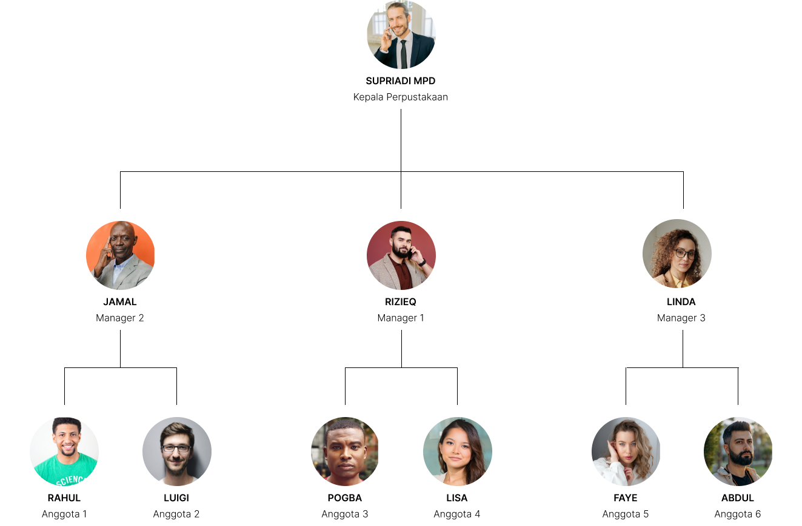

Etika Berinternet: Pengguna harus mengikuti etika berinternet yang baik dan menghormati hak cipta serta privasi penulis atau penerbit terkait bahan pustaka yang diakses.
Kehilangan atau Kerusakan Bahan Pustaka: Pengguna wajib bertanggung jawab atas bahan pustaka yang dipinjam. Apabila bahan pustaka hilang atau mengalami kerusakan selama masa peminjaman, pengguna akan bertanggung jawab
untuk menggantinya sesuai dengan ketentuan perpustakaan.
Pelanggaran Tata Tertib: Pelanggaran terhadap tata tertib perpustakaan online dapat menyebabkan pembatasan akses atau tindakan disiplin sesuai dengan kebijakan perpustakaan..
Struktur Pengurus

Panduan Perpustakaan
Cari buku yang ingin Anda pinjam
Tekan Pinjam pada buku yang ingin dipinjam
Staf kami akan memproses peminjaman dan mencatat tanggal pengembalian buku.
FAQ
Apa itu Ebook ?
Pengertian ebook adalah versi elektronik dari sebuah buku cetak yang dapat dibaca di komputer atau perangkat genggam yang dirancang khusus untuk keperluan ini.
Apa saja Fitur Ebook Library ?
Ebook library ada banyak macam fitur didalamnya seperti kita bisa meminjam buku, melihat buku dan melihat informasi tentang buku tersebut
Ada berapa jenis buku yang ada pada Ebook Library?
Dalam Ebook Library, terdapat 3 jenis buku. Diantaranya ada buku pelajaran, buku fiksi dan buku biografi
Kapan Ebook Library dibuat ?
Ebook Library dibuat pada tahun 2023.